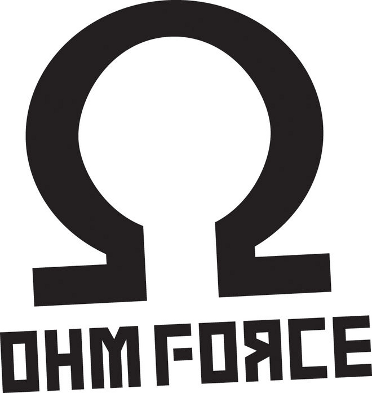

Entretien avec Mr. X
Présentation de Mr. X
Sexe : Masculin
Tranche âge : 35 - 40ans
Etude suivie : Ingénieur spécialité réseau
Lieu de formation : ISEP
Promotion : 2000
Métier : Développeur Freelance
Première expérience professionnelle
Pendant les 6 mois, sa mission a été de mettre en place une plateforme de e-commerce pour vendre des goodies Canal +. C’est à cette époque là, qu’il découvre le web et que Google commence à exister.
10 ans chez Ohm Force
Dès que ses amis lui ont proposé de le rejoindre pour monter Ohm Force, il n'a pas hésité longtemps. Tout en étant indépendant, il les a aidé et réalisé un certain nombre de missions de développement.
Formations chez Pythagore FD
Java, PHP, XML, Struts
Enseignements
Ecoles : ECE, ISEP
Cours : Bases de données, Systèmes d'exploitation, Java, C, Unix
Durée : 3-4 ans
Première et dernière fois
En tant que chef de projet, il dirigea des équipes et s'occupa des réunions avec le client. Il fit aussi du développement d’application en temps réel (rest, WebSockets ...).
Débauché par une société de conseil
Il resta quelques temps dans cette entreprise en tant que directeur informatique. Il se rendit rapidement compte qu'il valorisait sa liberté beaucoup plus que le gros salaire qu'il touchait. Il décida donc de se lancer en freelance sous le statut d'auto-entrepreneur.
Freelance
Statut : Auto-entrepreneur
Lieu de travail : chez lui
Horaires : libre
Avantages : Recherche de solutions efficaces et simples
Inconvénients : considéré comme profession libérale
Solution : crée sa propre entreprise
Ses conseils
Conseil n°1 : ne pas aller dans les grosses SSII
Conseil n°2 : aller travailler aux Etats-Unis ou au Canada
Conseil n°3 : savoir être à l’écoute, être réactif et flexible
Conseil n°4 : programmer dans un certains nombres de langages
Des questions ?